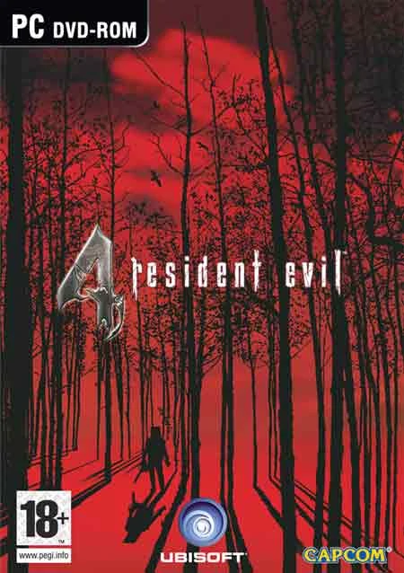
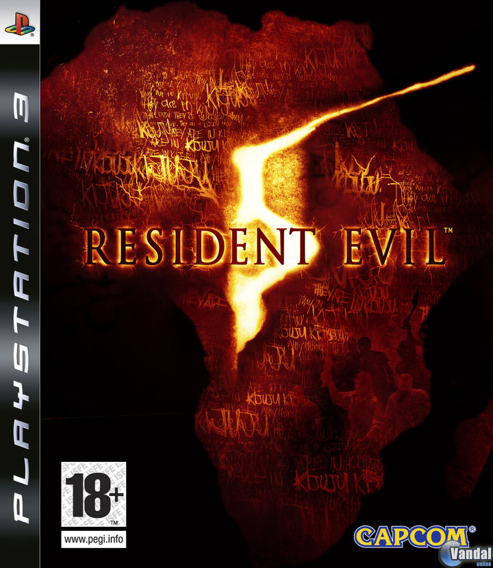
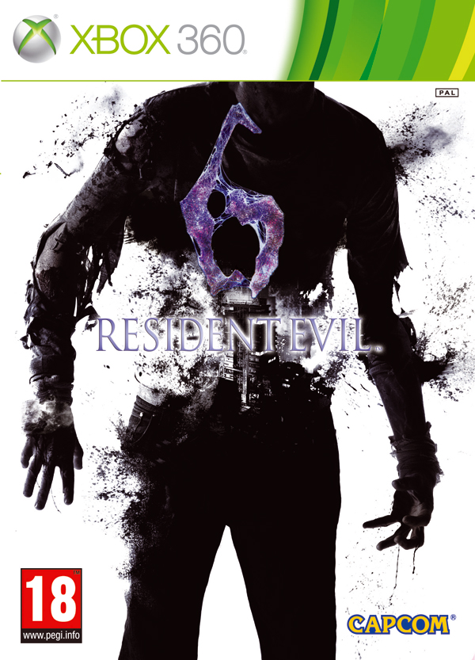
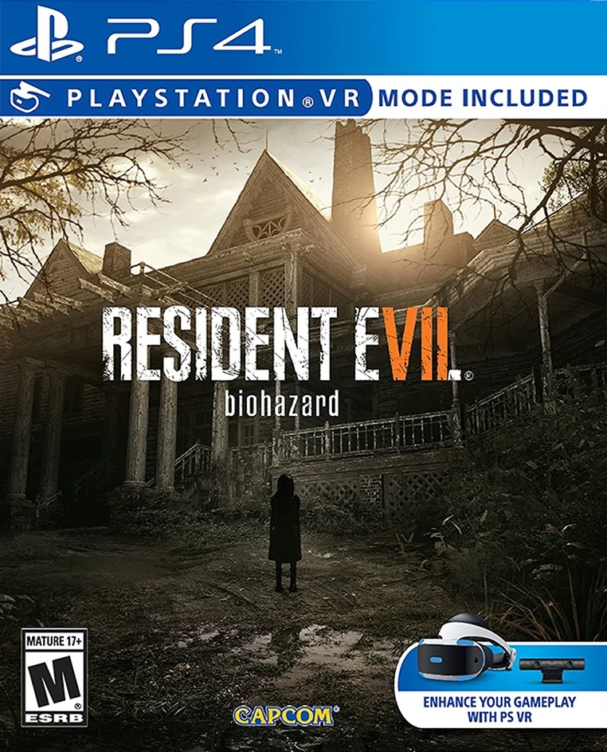
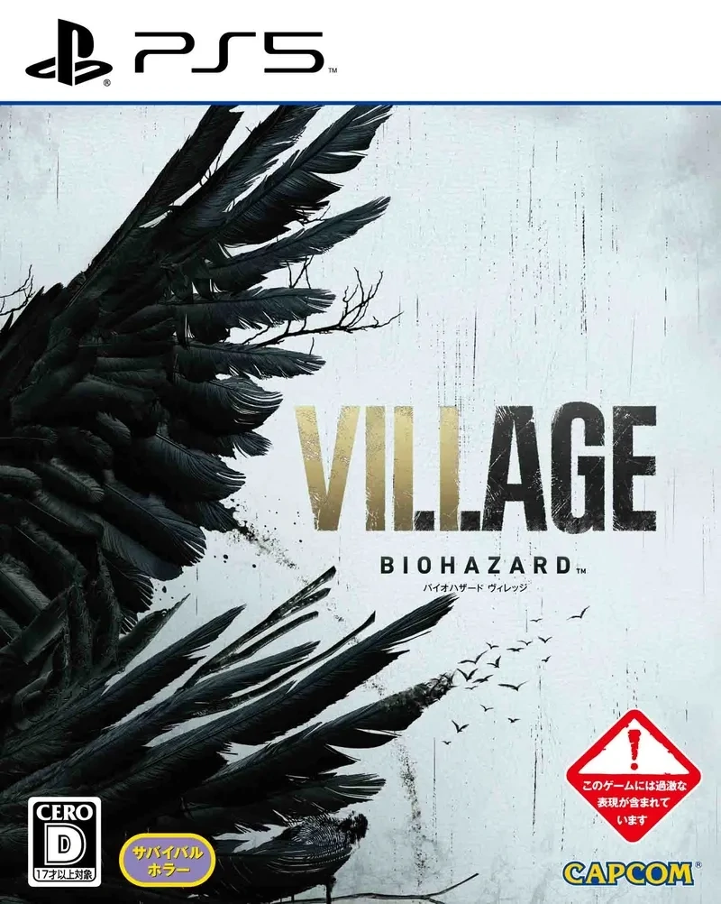

Se sitúa en el año 2004, 6 años después del Incidente en Raccoon City. Sigue la historia del sobreviviente Leon Scott Kennedy, ahora un agente de Estados Unidos al cual se le asignó la misión de rescatar a la hija del actual presidente del país, Ashley Graham, quien había sido raptada por un grupo terrorista desconocido. Los rumores indican que el paradero de Ashley es en una remota zona rural de Europa, en España. Eventualmente Leon se dirige a la zona y dentro de un vehículo junto a dos policías locales llegan a un pueblo en un día nublado y helado. Leon decide echar un vistazo y preguntar por la chica mientras los dos oficiales esperan en el vehículo.

La trama del juego se ubica en el año 2009, cinco años después de los acontecimientos posteriores a Resident Evil 4, poniéndonos en el papel esta vez de Chris Redfield quien ahora trabaja como agente activo de la B.S.A.A., organización creada para combatir el fenómeno del Bioterrorismo surgido tras la desaparición de la Corporación Umbrella, en una misión en territorio africano.

El juego comienza en un flashback de Leon Scott Kennedy donde hace una visita al presidente esto en el año 2013. Han pasado quince años desde los acontecimientos en Raccoon City y el presidente de los Estados Unidos, amigo personal de Leon está decidido en contar toda la verdad sobre esos hechos. Sin embargo, un ataque bioterrorista evita la comparecencia y transforma al presidente en un ser deforme, obligando a Leon a tomar una difícil decisión, junto a una nueva misteriosa compañera llamada Helena Harper.

Ethan, un hombre en busca de su esposa desaparecida en una mansión abandonada. Desde una perspectiva en primera persona con arma de fuego realista, gritos de dolor, y exagerados efectos de la salpicadura de sangre. A medida que los jugadores avanzan a través de la historia, escenas pueden representar casos de actos de gore e intensa de violencia: el brazo de un personaje desmembrado por una motosierra; pierna de un hombre cortado por la rodilla con una pala; un personaje empalado a través de la cara con una pala. Algunas áreas también muestran cuerpos mutilados que expuesta órganos/vísceras. Las palabras joder y mierda se escuchan en el diálogo.

La historia se desarrolla en una región montañosa aislada alrededor de un pueblo y un castillo medieval en Europa del Este. Ethan y Mia Winters siguieron juntos después de los eventos de Resident Evil 7: Biohazard e intentaron seguir con sus vidas tres años después del incidente en Dulvey. Durante los eventos del juego, la hija de los Winters, Rosemary, es secuestrada por unos individuos, lo que obliga a Ethan a viajar al pueblo, un lugar donde ocurren extraños sucesos por la región con la aparición de extrañas criaturas y el control del castillo por la familia Dimitrescu quienes tienen extrañas habilidades, viéndose también las caras con un viejo amigo del incidente de Dulvey, Chris Redfield.